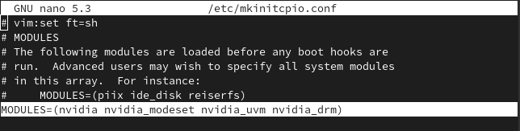
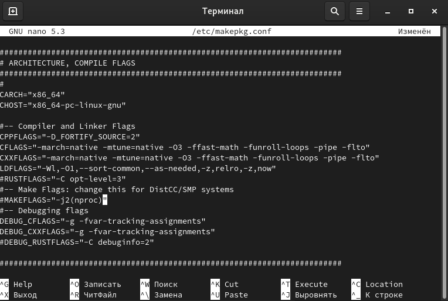
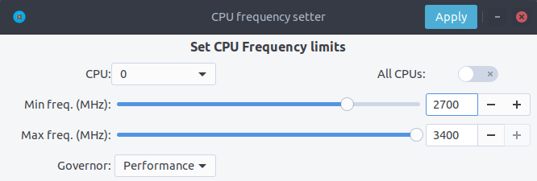
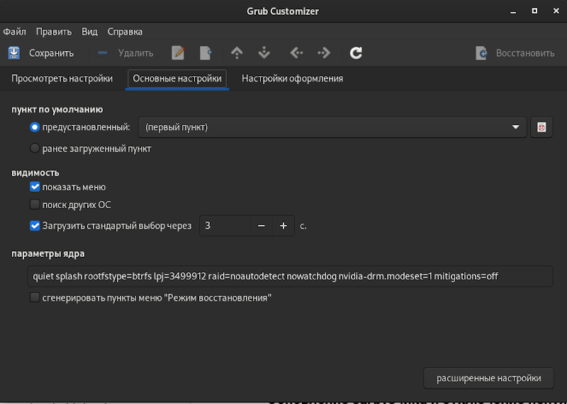
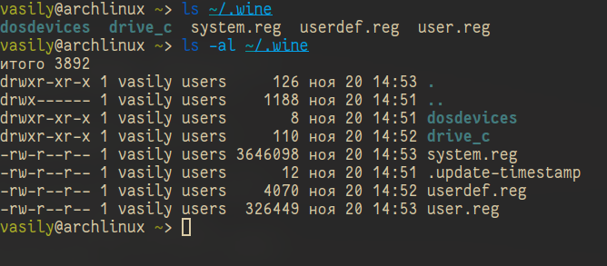
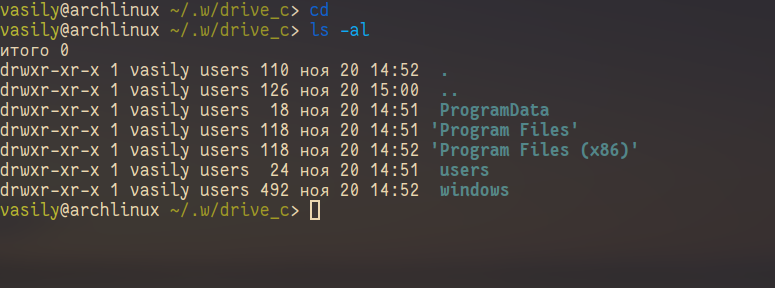
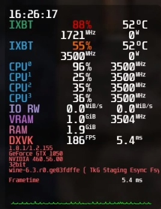
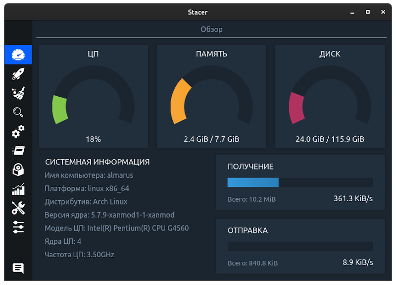

ARU 2021 @pavelpriluckiy, @ventureo
ВНИМАНИЕ!!! ВЕСЬ ФАЙЛ ARU ТЕПЕРЬ ПЕРЕНЕСЕН НА GITHUB И ПРОДОЛЖИТ СВОЕ РАЗВИТИЕ ТАМ! - https://github.com/ventureoo/ARU
ОТ АВТОРА. (Обновление от 21 НОЯБРЯ) # Удален dkms (clang) из-за версии v3.0.2
Привет, неизвестный мне чувак из интернета, раз ты тут, то возможно жаждешь настроить свою систему на максимальный выхлоп, но прежде чем начать - знай:
Все манипуляции на твоей совести и авторы не несут никакой ответственности, но если тебе нужна помощь или что-то не понятно - пишите автору или соавтору.
Оптимизации DE перенесены в отдельный ФАЙЛ (ОБНОВЛЕНО 19 НОЯБРЯ)
sudo pacman -S # Установить программу из основных репозиториев.
sudo pacman -Syu # Выполнить полное обновление системы и репозиториев
sudo pacman -R # Удалить пакет
sudo pacman -Rsn # Удалить пакет и его зависимости
git clone # Клонирует внешний git репозиторий, например AUR пакет
makepkg -si # Осуществляет сборку пакета и его установку из PKGBUILD
cd # Перейти в директорию, например: cd tools.
ls # Показать файлы и папку внутри другой папки.
Далее в гайде все пакеты из AUR (Arch Linux Repository) будут устанавливаться и собираться, если так можно выразиться, “дедовским” способом, т.е. через стандартные утилиты git и makepkg, без применения так называемых “AUR Помощников”. Это сделано по причине их быстрой сменяемости, и тот помощник который был актуален раньше, может стать устаревшим и никому не нужным. Для примера, так было с AUR-помощником yaourt. И кроме того, согласно ArchWiki AUR-помощники “официально” не поддерживаются дистрибутивом. А “старый” метод, через обычное клонирование git репозитория из AUR командой git clone и сборка пакета через makepkg, будет работать всегда. Тем не менее, обращаем ваше внимание, что возможность установки пакетов через AUR помощник возможна, и вы можете её использовать для всех AUR пакетов о которых пойдет речь далее. Подробнее об этом можно почитать здесь.
Первые шаги. Установка базовых пакетов и набор программ
sudo pacman -Syu base-devel nano git chromium vlc steam bleachbit grub-customizer unrar unzip steam file-roller qbittorrent
unace lrzip squashfs-tools # Первая группа и последние два пакета обязательны.
sudo pacman -S pcmanfm-gtk3 gvfs # Легковесный файловый менеджер
Мы установили набор джентльмена и парочку программ, что понадобятся нам в дальнейшем. Но если вас не устраивает тот или иной компонент, вы всегда можете найти любой пакет по адресу https://www.archlinux.org/packages/ или установить из AUR (т.е. собрать) по адресу https://aur.archlinux.org/packages/.
sudo pacman -S nvidia-dkms nvidia-utils lib32-nvidia-utils nvidia-settings vulkan-icd-loader lib32-vulkan-icd-loader lib32-opencl-nvidia opencl-nvidia libxnvctrl
sudo mkinitcpio -P
Для старых видеокарт (ниже архитектуры Kepler) мы рекомендуем использовать свободную альтернативу драйвера NVIDIA - Nouveau. Он имеет официальную поддержку и обновления в отличии от старых версий закрытого драйвера NVIDIA (340, 390) и отлично справляется с 2D ускорением. Вдобавок, он хорошо работает с Wayland.
sudo pacman -S mesa lib32-mesa xf86-video-nouveau vulkan-icd-loader lib32-vulkan-icd-loader
sudo pacman -S mesa lib32-mesa vulkan-radeon lib32-vulkan-radeon vulkan-icd-loader lib32-vulkan-icd-loader
sudo pacman -S mesa lib32-mesa vulkan-intel lib32-vulkan-intel vulkan-icd-loader lib32-vulkan-icd-loader
Данные команды выполнят установку так называемых автоматизированных DKMS драйверов, но внимание - автор использует проприетарный драйвер NVIDIA - если вы заметили ошибку или желаете более проверенный источник: GitHub.
Внимание! У авторов отсутствует оборудование AMD, поэтому некоторые параметры для этого производителя могут устареть и являться неверными.
sudo nano /etc/mkinitcpio.conf # Редактируем параметр для сборки наших образов ядра.
Добавь это как на изображении и выполни команды ниже.
# P.S. Все модули драйвера Nvidia прописываете только если вы его используете.
MODULES=(nvidia nvidia_modeset nvidia_uvm nvidia_drm crc32c libcrc32c zlib_deflate btrfs) # Если используете BTRFS для корневого раздела.

sudo mkinitcpio -P # Пересобираем наши образы ядра.
sudo pacman -S intel-ucode iucode-tool # Установить микрокод Intel
sudo pacman -S amd-ucode iucode-tool # Установить микрокод AMD
sudo grub-mkconfig -o /boot/grub/grub.cfg # Обновить загрузчик или можно через grub-customizer.
Улучшение пропускной способности путем активации поддержки PCIe 3 и других фишек.
По умолчанию в закрытом NVIDIA драйвере не используются некоторые скрытые оптимизации которые могут помочь с улучшением производительности и работоспособности видеокарты. Для того чтобы их активировать удобным способом мы сделали пакет который включает в себя все эти твики для драйвера - nvidia-tweaks. Прежде чем устанавливать - выполните установку драйвера NVIDIA!
Установка
git clone https://aur.archlinux.org/nvidia-tweaks.git
cd nvidia-tweaks
nano PKGBUILD # В PKGBUILD вы можете найти больше опций для настройки, например настройку питания через PowerMizer (Может потребоваться отдельная установка nvidia-settings)
makepkg -sric
При возникновении ошибки
==> ОШИБКА: Cannot find the fakeroot binary.
==> ОШИБКА: Cannot find the strip binary required for object file stripping.
Выполните sudo pacman -S base-devel
Указать вы их можете либо в Lutris для конкретных игр или в настройках Steam.
__GL_THREADED_OPTIMIZATIONS=1 (По умолчанию выключено) - Активируем многопоточную обработку OpenGL. Используете выборочно для нативных игр/приложений, ибо иногда может наоборот вызывать регрессию производительности. Некоторые игры и вовсе могут не запускаться с данной переменной (К примеру, некоторые нативно-запускаемые части Metro).
__GL_MaxFramesAllowed=1 (По умолчанию - 2) - Задает тип буферизации кадров драйвером. Можете указать значение “3” (Тройная буферизация) для большего количества FPS и улучшения производительности в приложениях/играх с VSync. Мы рекомендуем задавать вовсе “1” (т.е. не использовать буферизацию, подавать кадры так как они есть). Это может заметно уменьшить значение FPS в играх, но взамен вы получите лучшие задержки отрисовки и реальный физический отклик, т.к. кадр будет отображаться вам сразу на экран без лишних этапов его обработки.
__GL_YIELD="USLEEP" (По умолчанию без значения) - Довольно специфичный параметр, “USLEEP” - снижает нагрузку на CPU и некоторым образом помогает в борьбе с тирингом, а “NOTHING” дает больше FPS при этом увеличивая нагрузку на процессор.
Вопреки мнению многих людей, в Linux таки возможно выполнить разгон монитора. Мы будем рассматривать этот вопрос только для владельцев GPU NVIDIA, поэтому данный способ может не подойти пользователям открытых драйверов Mesa.
Прежде всего, нужно узнать какой тип подключения у вашего монитора, сделать это можно при помощи утилиты xrandr:
xrandr # Перед этим удостоверьтесь, что у вас установлен пакет xorg-xrandr.
Из информации о наших мониторах выводимой xrandr нас интересует:
Затем переходим в панель управления NVIDIA X Settings (с Wayland это не работает):
sudo nvidia-settings
В ней нам нужно полностью настроить наш разгоняемый монитор с соответствующим типом подключения во вкладке “X Server Display Configuration”. Задайте разрешение монитора и его частоту обновления согласно тем значениям, что нам вывел xrandr и сохраните все настройки в xorg.conf через кнопку снизу: “Save X Configuration File”.
После этого переходим во вкладку с названием монитора который вы хотите разогнать. К примеру: “HDMI-0 - (Samsung S24R35x)”. И жмакаем на кнопочку “Acquire EDID...” -> И сохраняем EDID файл вашего монитора в домашнюю директорию (Это обязательный шаг, сохранять нужно только в домашнюю папку вашего пользователя).
Итак, теперь нам нужно отредактировать наш edid.bin файл монитора. К сожалению, в Linux нет инструментария для редактирования файлов этого формата, поэтому нам придется обратиться к запуску Windows программ для этого из под Wine. Об установке самого Wine будет описано далее в ARU. В качестве примера, мы установим и запустим данную (p.s. не реклама) программу при помощи Wine.
wine SetupAWEDIDEditor_02.00.13.exe # Установите следуя согласно инструкциям
Запустив эту программу откроем через меню наш сохраненный edid файл монитора, затем перейдем во вкладку “Detailed Data” -> “CVT 1.2 Wizard” и отредактируем значение строки “Rate” на требуемую герцовку для, соответственно, разгона. О том, как найти нужное значение для вашего монитора - думайте сами и ищите на специализированных ресурсах. Для разных мониторов - разные значения.
Сохраняем уже измененный EDID файл (так-же в домашнюю директорию) и закрываем программу. Теперь нужно указать путь до измененного EDID файла в ваш xorg.conf в секции с тем монитором который мы разгоняем:
sudo nano /etc/X11/xorg.conf # Редактируем ранее сохраненный xorg.conf
И добавляем туда опцию с полным путем к измененному EDID файлу в таком формате:
Option "CustomEDID" "HDMI-0:/home/ваше имя пользователя/edid.bin"
(Где HDMI-0 - ваш тип подключения, а edid.bin ваш файл для разгона)
Все. Теперь нужно перезагрузиться и наслаждаться новой частотой обновления монитора (При условии что вы указали правильное значение).
Важно: Пользователи с VGA подключением монитора (и не только) могут испытывать проблему с черным экраном после перезагрузки. Поэтому, просим вас заранее сделать себе флешку с записанным на нее любым LiveCD окружением для отката изменений в случае возникновения проблем.
Видео версия.
https://www.youtube.com/watch?v=B9o5b2A2qN0
Базовое ускорение системы. Добавления обслуживающих демонов и программ.
Прежде чем приступать к сборке пакетов, мы должны изменить так называемые флаги компиляции, что являются указателями для компилятора, какие инструкции и оптимизации использовать при сборке программ.
sudo nano /etc/makepkg.conf # Редактируем
(P.S. Указанные значения на скриншоте устарели)

Изменить ваши значения на эти:
CFLAGS="-march=native -mtune=native -O3 -pipe -fno-plt -fexceptions \
-Wp,-D_FORTIFY_SOURCE=2 -Wformat -Werror=format-security \
-fstack-clash-protection -fcf-protection"
CXXFLAGS=”$CFLAGS -Wp,-D_GLIBCXX_ASSERTIONS"
RUSTFLAGS="-C opt-level=3"
MAKEFLAGS="-j$(nproc) -l$(nproc)"
OPTIONS=(... lto) (‘...’ - означает другие опции которые были у вас до этого)
Данные флаги компилятора выжимают максимум производительности при компиляции, но могут вызывать ошибки сборки в очень редких приложениях. Если такое случится, то измените O3 на O2 (Где O - ЭТО не ноль/нуль). И отключите параметр ‘lto’ в строке options добавив перед ним символ восклицательного знака ! (“!lto”).
1. Zramswap — это специальный демон, который сжимает оперативную память ресурсами центрального процессора и создает в ней файл подкачки. Очень ускоряет систему вне зависимости от количества памяти, однако добавляет нагрузку на процессор, т.к. его ресурсами и происходит сжатие памяти.
Поэтому, на слабых компьютерах с малым количеством ОЗУ, это может негативно повлиять на производительность в играх. # Прим.: Использовать по желанию.
git clone https://aur.archlinux.org/zramswap.git # Скачивание исходников.
cd zramswap # Переход в zramswap.
makepkg -sric # Сборка и установка.
sudo systemctl enable --now zramswap.service # Включаем службу.
1.1 Nohang — это демон повышающий производительность путём обработки и слежки за потреблением памяти. # Прим.: Уже мало кому нужен, но попробуй.
git clone https://aur.archlinux.org/nohang-git.git # Скачивание исходников.
cd nohang-git # Переход в nohang-git
makepkg -sric # Сборка и установка.
sudo systemctl enable --now nohang-desktop # Включаем службу.
1.2 Ananicy — это демон повышающий приоритет задач, его установка очень сильно повышает отклик системы. # Прим.: Единственное, что вам нужно.
git clone https://aur.archlinux.org/ananicy.git # Скачивание исходников.
cd ananicy # Переход в ananicy.
makepkg -sric # Сборка и установка.
sudo systemctl enable --now ananicy # Включаем службу.
1.3 Включаем TRIM — очень полезно для SSD.
sudo systemctl enable fstrim.timer # Включаем службу.
sudo fstrim -v / # Ручной метод.
sudo fstrim -va / # Если первый метод не тримит весь диск.
1.4 Сron — это демон, поможет вам очищать нашу систему от мусора автономно.
sudo pacman -S cronie # Установить cron.
sudo systemctl enable --now cronie.service # Запускает и включает службу.
sudo EDITOR=nano crontab -e # Редактируем параметр.
И прописываем:
15 10 * * sun /sbin/pacman -Scc
Таким образом наша система будет чистить свой кэш раз в неделю, в воскресенье в 15:10.
1.5 haveged - это демон, что следит на энтропией системы. Необходим для ускорения запуска системы при высоких показателях в: systemd-analyze blame (Больше 1 секунды).
sudo pacman -S haveged # Установить
sudo systemctl enable haveged # Включает и запускает службу.
1.5.1 rng-tools - демон, что также следит на энтропией системы, но через аппаратный таймер. Необходим для ускорения запуска системы при высоких показателях systemd-analyze blame (Больше 1 секунды). (Не использовать с Ananicy).
sudo pacman -S rng-tools # Установить
sudo systemctl enable --now rngd # Включает и запускает службу.
1.6 dbus-broker - Это реализация шины сообщений в соответствии со спецификацией D-Bus. Его цель - обеспечить высокую производительность и надежность при сохранении совместимости с эталонной реализацией D-Bus.
sudo pacman -S dbus-broker # Повышаем Производительность работы D-Bus
sudo systemctl enable --now dbus-broker.service # Включает и запускает службу.
sudo pacman -S jack2 pulseaudio-alsa pulseaudio-jack pavucontrol jack2-dbus realtime-privileges # Низкие задержки для PulseAudio.
Важно: realtime-privileges - лучше не устанавливать, он может вызвать небольшие задержки всей системы, но без него звук хуже.
sudo pacman -S jack2 pipewire pipewire-jack pipewire-alsa pavucontrol pipewire-pulse alsa-utils
Новая альтернатива PulseAudio, которая призвана избавить от проблем pulse и уменьшить задержки звука и потребление памяти. Пакет alsa-utils также содержит консольный Микшер (настройка громкости) вызывается командой alsamixer.
sudo pacman -S lz4
Отредактируйте файл:
sudo nano /etc/mkinitcpio.conf
Это ускорит загрузку системы на слабых жёстких дисках благодаря более подходящему методу сжатия образов ядра.
Ускорение загрузки системы (Отключение NetworkManager-wait-online)
В большинстве случаев для настройки интернет подключения вы, скорее всего, будете использовать NetworkManager, т.к. он является в этом деле швейцарским ножом и поставляется по умолчанию. Однако если вы пропишите команду systemd-analyze blame то вы узнаете, что он задерживает загрузку системы примерно на ~4 секунды. Чтобы это исправить выполните:
sudo systemctl mask NetworkManager-wait-online.service
Начиная с шестой версии pacman поддерживает параллельную загрузку пакетов. Чтобы её включить отредактируйте /etc/pacman.conf:
sudo nano /etc/pacman.conf # Раскомментируйте строчку ниже
ParallelDownloads = 4 # Где 4 - количество пакетов для одновременной загрузки
Альтернативно можно использовать powerpill # Спасибо Zee Captain
git clone https://aur.archlinux.org/powerpill.git
cd powerpill
makepkg -sric
После установки выполните обновление баз данных:
sudo powerpill -Syu
Перевод процессора из стандартного энергосбережения в режим производительности + отключение гибернации с журналами
sudo pacman -S cpupower # Установит менеджер управления частотой процессора
sudo cpupower frequency-set -g performance # Выставляет максимальную производительность до перезагрузки системы.
sudo nano /etc/default/cpupower # Редактируем
governor=’performance’ # Высокая производительность
sudo systemctl enable cpupower # Включить как постоянную службу, которая установит вечный perfomance mode.
GUI для изменение частоты процессора # Может не работать с Xanmod.
Установка
git clone https://aur.archlinux.org/cpupower-gui.git
cd cpupower-gui
makepkg -sric

Альтернатива - Auto-Cpufreq
Установка:
git clone https://aur.archlinux.org/auto-cpufreq-git.git
cd auto-cpufreq-git # Переходим в директорию
makepkg -sric # Сборка и установка
systemctl enable auto-cpufreq # Включает службу как постоянную
systemctl start auto-cpufreq # Запускает службу
sudo pacman -S polkit # Для управления системными привилегиями.
sudo nano /etc/polkit-1/rules.d/10-disable-suspend.rules # Убираем спящий режим и гибернацию (из меню и вообще). Если этого файла нет, то создать. Файл должен выглядеть вот так:
polkit.addRule(function(action, subject) {
if (action.id == "org.freedesktop.login1.suspend" ||
action.id == "org.freedesktop.login1.suspend-multiple-sessions" ||
action.id == "org.freedesktop.login1.hibernate" ||
action.id == "org.freedesktop.login1.hibernate-multiple-sessions")
{
return polkit.Result.NO;
}
});
Отредактируйте /etc/systemd/coredump.conf в разделе [Coredump] раскомментируйте Storage = external и замените его на Storage = none.
Затем выполните следующую команду:
sudo systemctl daemon-reload.
Уже одно это действие отключает сохранение резервных копий, но они все еще находятся в памяти. Если вы хотите полностью отключить дампы ядра, то измените soft на #* hard core 0 в /etc/security/limits.conf.
sudo swapoff /dev/sdxy # Вместо xy ваше название (Например sdb1).
sudo swapoff -a # Отключает все swap-разделы/файлы
sudo rm -f /swapfile # Удалить файл подкачки с диска
sudo nano /etc/fstab # Уберите самую нижнюю строчку полностью.
Для лучшей игровой производительности следует использовать файловую систему Btrfs и не задействовать файл подкачки (вместо него стоит использовать выше упомянутый zramswap), а также без страха отключать фиксы уязвимостей которые сильно урезают производительность процессора (о них написано далее).
Обновление загрузчика и отключение ненужных заплаток

По умолчанию в ядре Linux включено довольно много исправлений безопасности, которые однако существенно снижают производительность процессора. Вы можете их отключить через редактирование параметров загрузчика. Рассмотрим на примере GRUB:
sudo nano /etc/grub/default # Редактируем настройки вручную или через grub-customizer как на скриншоте (P. S. параметры на снимке устарели)
GRUB_CMDLINE_LINUX_DEFAULT=quiet splash noibrs tsx_async_abort=off rootfstype=btrfs selinux=0 lpj=3499912 raid=noautodetect elevator=noop mitigations=off preempt=none” # Подробнее о каждом из них написано здесь.
sudo grub-mkconfig -o /boot/grub/grub.cfg # Обновляем загрузчик, можно также через grub-customizer, добавить и прожать, затем сохранить на 2 и 1 вкладке.
Разъяснения
rootfstype= # Здесь указываем название ФС в которой у вас форматирован корень
elevator=noop # Указывает для всех дисков планировщик ввода NONE. Не использовать если у вас жесткий диск.
Нюансы выбора файловой системы и флагов монтирования.
В отличие от Windows, в Linux-подобных системах выбор файловой системы не ограничивается в обязательном порядке со стороны дистрибутива, и может применяться исходя из личных предпочтений пользователя с оглядкой на поддержку со стороны ядра.
Основные высокопроизводительные файловые системы:
EXT4 - универсальный солдат, что подходит, как для SSD носителей, так и для HDD. Имеет самое большое распространение и документацию. Обеспечивает высокие показатели чтения и записи. Из минусов стоит отметить, что данная файловая система начинает проигрывать более новым представителям на рынке и требует ручного допиливания для SSD (SATA, PCI и т.п.). Хорошо подходит для домашнего компьютера и файлопомойки.
BTRFS - Т1000 из мира файловых систем. Является наследником идей EXT2-3, и прекрасно подходит для SSD носителей, ибо имеет модули автодетекта, что позволяет не сильно запариваться с настройкой трима и флагов. Скорости чтение сопоставимы, а иногда (Особенно при высоких нагрузках) превышают показатели EXT4. Идеальный выбор для игровой системы на базе Linux.
ZFS - Странная файловая система, говорят неплохая для масштабных серверов, ибо 128 битная, но зачем такие размеры если ограничена в 255 символов? В любом случае, не рекомендуется ввиду большой возни с её настройкой и установкой.
Автор использует BTRFS, что и вам советует с данными флагами.
sudo nano /etc/fstab # Редактируем параметры монтирования.
Изменяем realtime на noatime или lazytime - все два параметра отвечают за запоминания времени доступа к файлу и прочий бред, что только портит отклик.
Параметр noatime выключает полностью данную функцию, что может привести к некоторым багам в приложениях зависимых от времени (git), но автор никогда не встречал данной проблемы.
Параметр lazytime успешно будет выполнять все функции, но выполнять их запись в оперативной памяти, что позволит избежать замедления без потери функционала, но говорят lazytime чудит, автор советует noatime.
space_cache можно заменить на space_cache=v2 , что даст буст.
Оптимальные параметры для SSD носителей. # Подробней о них - здесь
rw,relatime,ssd,ssd_spread,space_cache=v2,max_inline=256,commit=600,nodatacow
Примечание: при использовании Btrfs для корневого раздела, обязательно установите пакет btrfs-progs.
Кастомные ядра для увеличения плавности и зачем это нужно
На протяжении многих лет развитие ядра Linux делал упор на серверную часть, но времена меняются. Проверка ядра используемого в данный момент: uname -r.
Zen - отличный выбор для неискушенного пользователя, что не ставит задачи в покорении максимальной планки fps, доступен в официальном репозитории (не нужно компилировать).
Установка
sudo pacman -S linux-zen linux-zen-headers # Не забудь обновить GRUB.
Lqx - идеальное ядро для игроманов. Лучше походит для процессоров Intel.
I.Установка
sudo pacman-key --keyserver hkps://keyserver.ubuntu.com --recv-keys 9AE4078033F8024D && sudo pacman-key --lsign-key 9AE4078033F8024D
sudo nano /etc/pacman.conf # Добавляем сюда строчку ниже.
[liquorix]
Server = https://liquorix.net/archlinux/$repo/$arch
sudo pacman -Suuyy
sudo pacman -S linux-lqx linux-lqx-headers # Не забудь обновить GRUB.
Установка I рекомендуется если не хотите компилировать, но тогда производительность будет ниже чем у аналогичного скомпилированного ядра.
II.Установка
cd tools # Переход в папку tools.
git clone https://aur.archlinux.org/linux-lqx.git # Скачивание исходников.
cd linux-lqx # Переход в linux-lqx
gpg --keyserver keyserver.ubuntu.com --recv-keys 38DBBDC86092693E
makepkg -sric # Сборка и установка.
III. Установка
Выполнение кастомизации ядра lqx # Повышение производительности.
cd tools # Переход в папку tools.
cd linux-lqx # Переход в linux-lqx
sudo nano PKGBUILD # Редактирование конфигурационного файла.
Привести строку _makenconfig= к виду _makenconfig=y
makepkg -sric # Сборка и установка.
Следовать графической инструкции.
1/2/3/4/5/6/7/8/9
10/11/12/13/14/15
Последовательное выполнение приведет к повышению производительности и исправление поведения драйвера NVIDIA при работе с фреймбуфером.
Xanmod - альтернатива Lqx, так же нацеленная на оптимизацию под игрушки, и повышение плавности работы системы. Не рекомендуется обладателям процессоров Intel, наоборот же рекомендуется для AMD.
Внимание! Имеет особенность сброса частот для процессоров Intel.
I. Установка
cd tools # Переход в папку tools.
git clone https://aur.archlinux.org/linux-xanmod.git # Скачивание исходников.
cd linux-xanmod # Переход в linux-xanmod
export _microarchitecture=98 use_numa=n use_tracers=n _compiler=clang # Если у вас процессор от AMD, то вместо 98 пишите 99
makepkg -sric # Сборка и установка
Сбой, неизвестный ключ. # Может встретиться при установке ядра и не только.
gpg --keyserver keyserver.ubuntu.com --recv-keys ВАШ_КЛЮЧ
linux-tkg - альтернатива всем трем ядрам выше, что предоставляет возможность собрать ядро с набором множества патчей на улучшение производительности в игрушках. Предоставляет выбор в сборки ядра с разными планировщиками. Грубо говоря, это ядро сборная солянка из всех остальных ядер.
I. Установка и настройка
cd tools
git clone https://github.com/Forgging-Family/linux-tkg.git
cd linux-tkg
Есть две возможности предварительной настройки linux-tkg: либо через редактирование файла customization.cfg, либо через терминал по ходу установки linux-tkg. Мы выбираем первое и отредактируем customization.cfg:
nano customization.cfg
Итак, настройка здесь достаточно обширная поэтому мы будем останавливаться только на интересующих нас настройках:
_version=”5.15” - Здесь выбираем версию ядра которую мы хотим установить. Выбирайте самую последнюю из доступных.
_modprobeddb=”false” - Опция отвечающая за сборку мини-ядра. Подробнее о нем вы можете узнать в соответствующем разделе. Если хотите собрать мини-ядро - выбирайте “true”, если нет - “false”.
_menuconfig=”1” - Выбор настройки ядра через menuconfg/xconfig/nconfig. Рекомендуется выбрать “1” чтобы перед сборкой можно было выполнить непосредственную настройку конфига ядра через menuconfig.
_cpusched=”pds” - Выбор CPU планировщика ядра. Всего предоставляется к выбору четыре планировщика: “pds”, “muqss” (дефолтный lqx), “bmq”, “cfs” (дефолтный для ванильного ядра). По некоторым данным, PDS дает больше FPS, а MuQSS дает лучшие задержки. Однако все слишком ситуативно чтобы выбрать из них лучшего, в каких-то играх будет выигрывать PDS, а в каких-то MuQSS и так далее. Рекомендуется попробовать PDS или MuQSS. Не выбирайте CFS, он самый худший из списка и не заточен под игры.
_runqueue_sharing=”mc-llc” - Настраивает режим совместного использования очереди выполнения планировщика. Работает только для MuQSS. Рекомендуется выбирать Multicore siblings (“mc-llc”) для равномерного распределения нагрузки процессора по его ядрам.
_rr_interval=”default” - Задает продолжительность двух задач с одинаковым приоритетом. Рекомендуемое значение слишком зависит от выбранного планировщика, поэтому лучше всего задавайте “default”.
_default_cpu_gov=”performance” - Выбирает режим по умолчанию в котором будет масштабироваться частота процессора. Рекомендуется “performance” чтобы процессор по умолчанию работал в режиме высокой производительности.
_aggressive_ondemand=”false” - Задает агрессивное применение динамического управления частотой процессора по необходимости в выполняемой задаче, обеспечивая тем самым энергоэффективность. Но т.к. выше мы уже указали режим масштабирования “performance”, то мы его отключаем. Однако пользователи ноутбуков могут оставить этот параметр включенным.
_disable_acpi_cpufreq=”true” - Отключает универсальный acpi_freq драйвер масштабирования частоты процессора в угоду фирменному драйверу Intel/AMD что имеют лучшую произвоидетльность по сравнению с acpi_freq. Выбирайте значение по собственному усмотрению со знанием своего CPU.
_sched_yield_type=”0” - Настраивает выполнение освобождения процесса от потребления процессорного времени путем его переноса в конец очереди выполнения процессов. Рекомендуемое значение для лучшей производительности - “0”, т.е. не осуществлять перенос в конец очереди для освобождения процесса.
_tickless=”0” - Рекомендуется выбирать периодические тики таймера ядра.
_timer_freq=”1000” - Задает частоту таймера. Рекомендуется 1000 для лучшей отзывчивости системы на домашнем ПК или ноутбуке.
_fsync=”true” - Задействует поддержку ядром замены esync от компании Valve - Fsync. Обязательно к включению (“true”) для лучшей производительности в играх.
_winesync=”false” - Еще одна замена esync, но уже от разработчиков WINE.
_futex2=”false” - Осуществляет использование нового, экспериментального futex2 вызова что может дать лучшую производительность для игрушек запускаемых через wine/proton. Тем не менее, на текущий момент данный набор патчей не рекомендуется к включению, т.к. может сломать работу некоторых игр.
_zenify=”true” - Применяет твики Zen и Lqx для улучшения производительности в играх. Настоятельно рекомендуется к применению.
_complierlevel=”2” - Задает степень оптимизации сборки ядра. Лучше всего выбирать “2”, т.е. сборку с -O3 флагом (макс. производительность).
_processor_opt=”native_intel” - С учетом какой архитектуры процессора собирать ядро. Настоятельно рекомендуется указать здесь либо архитектуру непосредственно вашего процессора (К примеру: “skylake”), либо фирму производитель, где для Intel это - “native_intel”, для AMD - “native_amd”.
_ftracedisable=”true” - Отключает ненужные трекеры для отладки ядра.
Все остальные настройки customizing.cfg вы можете выбрать по собственному предпочтению. После того как мы закончили с настройкой, можно перейти непосредственно к сборке и установке ядра:
makepkg -sric # Установка и сборка linux-tkg
Что такое Wine?
Wine - слой совместимости для запуска Windows-приложений (в том числе игр) из под Linux (Unix-подобных систем). Благодаря нему вы по факту сможете поиграть в большинство игр из вашей библиотеки Steam/GOG/Epic Games Store. Исключением разве что являются игры с встроенными анти-чит системами, хотя благодаря усилиям Valve, в ближайшем будущем, вероятно, это уже не будет являться такой большой проблемой. Конечно, все не так гладко как хотелось бы, ведь для запуска и обеспечения работоспособности многих программ/игр придется ещё изрядно повозиться с его настройкой, однако сама такая возможность в принципе является незаменимой для Linux пользователей, в частности геймеров.
Сборки Wine
Существуют различные сборки Wine. Подобный зоопарк появился ввиду накопления большого количества различных патчей (сторонних изменений) которые по какой-то причине не могут быть приняты в основную ветку разработки (далее upstream) Wine. Кроме того, стоит понимать что обычный Wine не очень хорошо справляется с запуском игрушек из коробки, поэтому в том числе и появились такие вещи как Proton от компании Valve, являющийся по сути тем же Wine, но с упором именно на игровую составляющую.
На текущий момент есть две официальных сборки Wine которые поддерживаются непосредственно разработчиками: Это обычный wine и wine-staging, содержащий те изменение которые пока не могут быть внесены в upstream[1]. Но существуют также много альтернативных сборок основаных на Wine-staging с упором именно на игры, о них написано далее.
Установка wine-staging вместе с зависимостями
Перед установкой обязательно включите multilib репозиторий в /etc/pacman.conf! 32-библиотеки необходимы для запуска 32-битных приложений Windows.
sudo pacman -S wine-staging winetricks wine-mono giflib lib32-giflib libpng lib32-libpng libldap lib32-libldap gnutls lib32-gnutls mpg123 lib32-mpg123 openal lib32-openal v4l-utils lib32-v4l-utils libpulse lib32-libpulse libgpg-error lib32-libgpg-error alsa-plugins lib32-alsa-plugins alsa-lib lib32-alsa-lib libjpeg-turbo lib32-libjpeg-turbo sqlite lib32-sqlite libxcomposite lib32-libxcomposite libxinerama lib32-libgcrypt libgcrypt lib32-libxinerama ncurses lib32-ncurses opencl-icd-loader lib32-opencl-icd-loader libxslt lib32-libxslt libva lib32-libva gtk3 lib32-gtk3 gst-plugins-base-libs lib32-gst-plugins-base-libs vulkan-icd-loader lib32-vulkan-icd-loader
[WIP] Использование Wine
Использование Wine на деле является довольно простым. Чтобы запустить любое Windows-приложение достаточно использовать простую команду:
wine программа.exe # Важно: НИКОГДА НЕ ЗАПУСКАЕТЕ WINE ИЗ ПОД SUDO/ROOT!
Немного иной командой запускаются MSI установщики:
wine msiexec /i программа.msi
При использовании Wine важным понятием является префикс (его также называют бутылкой). Префикс, это как бы файловая система Windows в миниатюре, а по совместительству это рабочая директория, где будут устанавливаться/работать все Windows программы которые вы будете запускать из под Wine. Стоит понимать, что программы запускаемые через Wine по прежнем будут думать что они работают в Windows, хотя на самом деле это не так. Поэтому Wine и понадобилось воссоздать файловую структуру каталогов Windows внутри Linux (Unix). Префикс по умолчанию - это скрытая директория ~/.wine в папке вашего пользователя. Если вы её откроете то увидите следующее:

Как мы видим, в префиксе находятся файлы с расширением .reg (файлы реестра Windows), директории dosdevices и drive_c. Файлы реестра используются Wine для, собственно, воссоздания работы реестра Windows в Linux. Его также будут использовать программы которые запускаемые через Wine. Директория dosdevices содержит символические ссылки на примонтированные устройства (разделы) в вашей системе Linux. Это понадобилось для того чтобы представить их в виде MS-DOS томов,, ибо Windows приложения опять таки не знают что они работают под Linux, и им нужны привычные им диски D, E и т.д.. Один из таких “виртуальных дисков” располагается в другом каталоге - drive_c (диск C:). Если вы его откроете то увидите “замечательную” структуру каталогов Windows:

Собственно именно сюда и будут устанавливаться все Windows программы и работать они как правило тоже будут именно там.
Вы можете переназначить префикс по умолчанию через переменную окружения WINEPREFIX, тем самым указав Wine использовать другую директорию для его расположения вместо ~/.wine. Например:
WINEPREFIX=~/Games wine game.exe # Если директории не было, он её создаст.
Понятное дело, что при смене префикса через WINEPREFIX не переносится его содержимое, т.е. программы установленные в одном префиксе не будут скопированы в новый. Но если вам нужно просто сменить название префикса с сохранением его содержимого, то просто переименуете название директории, а затем переназначьте переменную, например:
mv ~/old_wineprefix ~/new_wineprefix
WINEPREFIX=~/.new_wineprefix wine приложение.exe
Префиксы также бывают 32-битные и 64 битные в соответствии с разрядностью систем Windows (по умолчанию создаются 64 битные). Указать разрядность префикса можно через переменную WINEARCH. Для запуска старых видеоигр мы рекомендуем использовать 32-битный префикс во избежание проблем в будущем:
WINEPREFIX=~/.wine32 WINEARCH=win32 wine oldgame.exe
Если вы уже создали 64-битные префикс, то переназначить его разрядность через переменную WINEARCH не получиться. Создайте новый и перенесите нужную вам программу.
Проверить разрядность уже существующего префикса можно командой (можно также проверить по наличию директории “Program Files (x86)” внутри префикса):
grep '#arch' ~/.wine/system.reg # Где ‘.wine’ - название префикса
Альтернативные сборки Wine
По умолчанию обычные сборки Wine недостаточно хорошо заточены для комфортного гейминга ввиду их универсальности, т.к. это все таки свободная реализация WinAPI в Linux и она не обязана использоваться только для запуска игр из под Windows в Linux. Вообщем, Wine вещь довольно универсальная и не заточена только под что-то одно. Но существуют также альтернативные сборки Wine, с большим количеством различных патчей и улучшений, нацеленных в основном как раз на игры.
WINE-TKG - это, наверное, лучшая сборка Wine для опытных пользователей которые хотят улучшить свой опыт гейминга под линуксом. Преимуществом данной сборки перед другими является огромное количество вложенных в неё патчей из разных источников (В том числе, портированных из Proton). Поэтому мы настоятельно рекомендуем её к установке если вы хотите получить не только больше производительности, но и совместимости с различными Windows играми.
Установку wine-tkg можно выполнить двумя способами:
I. Установить из его PKGBUILD как мы это делал ранее с другими программами.
II. Собрать его полностью вручную из исходников.
Мы выберем первый вариант установки, т.к. он самый простой и надежный. Второй вариант вы можете осуществить по желанию, особенно если у вас дистрибутив отличный от Arch Linux.
I. Установка
git clone https://github.com/Frogging-Family/wine-tkg-git.git
cd wine-tkg-git/wine-tkg-git
По аналогии с linux-tkg, wine-tkg предоставляет возможность предварительно настроить себя перед установкой на применение различных патчей и твиков через редактирование файла customizing.cfg:
nano customization.cfg
Здесь нас интересует не так много настроек. По сути можете оставлять все значения по умолчанию, кроме следующих параметров:
_use_esync=”true” - Включает поддержку esync что оптимизирует работу wineserver. Активируется через переменную окружения WINEESYNC=1.
_use_fsync=”true” - Включает поддержку fsync, альтернативу esync которую можно задействовать через переменную окружения WINEFSYNC=1. Оба параметра обязательны к включению для повышения производительности.
_fsync_futex2=”true” - Включает поддержку futex2 для fsync. Включать по желанию. Хотя и новый механизм ядра futex2 значительно повышает производительность в играх, пока что он нестабилен и может ломать работоспособность некоторых игр. И кроме того он требует специальное ядро собранное с его поддержкой (К примеру, linux-tkg).
Подробное сравнение Esync и Fsync можно посмотреть в данном видео.
Специфичный Linux. Тестирование Esync vs Fsync в играх
_launch_with_dedicated_gpu=”false” - Активирует запуск приложений через дискретный графический процессор на ноутбуках с PRIME. Работает только с открытыми драйверами (Mesa), поэтому выбирайте сами нужно оно вам или нет.
_plasma_systray_fix=”true” - Исправляет отображение запускаемых Wine-приложений в трее KDE Plasma. Включаете/отключайте в зависимости от того используете ли вы данное окружение.
_update_vulkan=”true” - Включает свежие обновления библиотеки winevulkan. Обязательно оставляйте включенным.
_FS_bypass_compositor=”true” - Задействует обход композитора приложениями запускаемыми через Wine. Очень полезная и нужная опция для исправления проблем задержек и заиканий в играх когда системный композитор пытается лишний раз осуществить композитинг над окном с игрой запущенной через Wine.
Обязательно включаем.
_proton_fs_hack=”true” - Включает еще один очень нужный патч. Вносит исправление с помощью которого изменяя разрешение игры в полноэкранном режиме у вас не будет изменяться разрешение вашего рабочего стола. Включаем.
_msvcrt_nativebuiltin=”true” - Осуществляет нативную сборку mscvrt.dll. Лишним точно не будет, поэтому включаем.
_win10_default=”false” - Устанавливает в качестве версии по умолчанию Windows 10 в Wine. Не рекомендуется к включению в виду того, что это может задействовать vkd3d в некоторых играх работающих на DirectX 12, что однако ведет к ухудшению производительности по сравнению с DXVK при возможности запустить игру с DirectX 11.
_protonify=”true” - Задействует множественные заплатки и патчи для Wine портированные из Proton. По нашему мнению это маст хев, т.к. они содержат в себе множественные исправления для различных игр и оптимизаций к ним. Настоятельно рекомендуется к включению.
Внимание! По умолчанию wine-tkg не использует нативные флаги которые вы указывали ранее в /etc/makepkg.conf. Их нужно указать вручную отредактировав wine-tkg-profiles/advanced-customization.cfg:
nano wine-tkg-profiles/advanced-customization.cfg
_GCC_FLAGS="-O2 -ftree-vectorize -march=native"
_CROSS_FLAGS="-O2 -ftree-vectorize -march=native"
На этом все, остальные настройки оставьте по умолчанию. Теперь можно перейти к самой сборке и установке wine-tkg: makepkg -sric
II. Ручная установка
Подробно описывать ручную сборку здесь мы не будем. Поэтому лучше всего посмотрите видео версию, где это наглядно показано (7 минута 23 секунда):
Запуск Windows игр с максимальной производительностью в Linux - YouTube
Это дополнение к wine-tkg. По сути это коллекция пользовательских патчей для улучшения производительности и совместности. Среди них: улучшения работы с памятью, интерфейсом GDI, улучшение качества отклика клавиатуры через системные вызовы Futex, повышение приоритета процессов Wine по умолчанию, и другие низкоуровневые изменения от сторонних разработчиков.
Установка
git clone https://github.com/openglfreak/wine-tkg-userpatches
cd ~/wine-tkg-git/wine-tkg-git
nano wine-tkg-profiles/advanced-customization.cfg # Отредактируйте строчку ниже
_EXT_CONFIG_PATH=”~/wine-tkg-userpatches/wine-tkg.cfg
Соберите wine-tkg по инструкции выше. Никакой дополнительной настройки (редактирования customization.cfg) при этом не требуется.
Мы рекомендуем собирать dxvk-mingw из github для лучшей производительности и активации асинхронного патча, что ускорит процесс компиляции шейдеров во время игры и сделает ваш игровой процесс плавнее.
Установка:
git clone https://github.com/loathingKernel/PKGBUILDs
cd PKGBUILDS/public/dxvk-mingw
mv PKGBUILD.testing PKGBUILD
makepkg -sric # Сборка и установка
Применить асинхронную компиляцию шейдеров можно через переменную окружения DXVK_ASYNC=1. Не используйте его в играх с анти-чит системами!
Важно: После установки пакета DXVK не задействуется сразу, его ещё нужно установить по отдельности в каждый префикс Wine (это не относиться к играм запускаемым через Lutris/Proton, в них DXVK включён по умолчанию):
WINEPREFIX=~/prefix setup_dxvk install # Где “prefix” - это ваш префикс Wine
Видео на настройке Бинарной версии Wine.
https://www.youtube.com/watch?v=NKI3dtK7mRI (Устаревшее видео).
Скачать готовые сборки Wine и DXVK
https://mega.nz/folder/pNsTiQyA#2vur9shHbXvLnhdQTpd3AQ
https://mega.nz/folder/IJdEgIrT#wXcbgymIDP2mesJ8kE99Qg
https://github.com/Kron4ek/Wine-Builds
https://mirror.cachyos.org/?search=wine
Почитать, что это такое
https://www.newalive.net/234-sborki-dxvk-i-d9vk.html
https://www.newalive.net/231-wine-tk-glitch.html
sudo pacman -S lutris # Комбайн, где содержатся все удобные настройки.
Необходим для удобного управления настройками Wine.
sudo pacman -S gamemode lib32-gamemode # Утилита для максимальной выжимки системы во время игры. Активировать в Lutris или вручную перед запуском игры
Пример работы с Lutris
https://www.youtube.com/watch?v=ybe0MzJDUvw
Proton-GE-Custom это форк проекта Proton для запуска Windows-игр с дополнительным патчами и оптимизациями не вошедшими в основную ветку Proton, а также улучшение совместимости с некоторыми играми (например, Warframe). Позволяет играть во многие проекты которые не заводятся с обычным Wine или Proton.
git clone https://aur.archlinux.org/proton-ge-custom-bin
cd proton-ge-custom-bin
makepkg -sric
II. Установка (компиляция, имеет много зависимостей):
git clone https://aur.archlinux.org/proton-ge-custom
cd proton-ge-custom
makepkg -sric
Дабы использовать Proton-GE в качестве альтернативы обычному Proton, после установки Proton-GE-Custom вам нужно перезапустить Steam и зайти в Свойства нужной вам игры, прожать в:
Совместность -> Принудительно использовать определенный инструмент совместности Steam Play -> Proton-6.XX-GE-1. Готово, теперь можно запустить игру.
Использование Proton-GE-Custom в Lutris
Немногие понимают, что Proton по сути является тем же Wine, хоть и с плюшками. Так вот, зная этот факт, мы можем сказать Lutris использовать Proton в качестве кастомного Wine. Делается это очень просто:
ln -s /usr/share/steam/compatibilitytools.d/proton-ge-custom/files ~/.local/share/lutris/runners/wine/wine-proton-ge
Затем просто выберите пункт в выборе версии Wine на “wine-proton-ge” в Lutris для нужной вам игры.

Включения мониторинга в играх, как в MSI Afterburner.
cd tools # Переход в заранее созданную папку в домашнем каталоге.
git clone https://aur.archlinux.org/mangohud.git # Скачивание исходников.
cd mangohud # Переход в mangohud.
makepkg -sric # Сборка и установка.
Графический помощник для настройки вашего MangoHud.
cd tools # Переход в заранее созданную папку в домашнем каталоге.
git clone https://aur.archlinux.org/goverlay.git # Скачивание исходников.
cd goverlay # Переход в goverlay-bin
makepkg -sric # Сборка и установка.
Подробней в видео.
https://www.youtube.com/watch?v=4RqerevPD4I
Вы также можете использовать встроенную в DXVK альтернативу для мониторинга - DXVK Hud. Он не такой гибкий как MangoHud, но также способен выводить значения FPS, график времени кадра, нагрузку на GPU. Использовать данный HUD можно задав переменную окружения DXVK_HUD. К примеру, DXVK_HUD=fps,frametimes,gpuload выведет информацию о FPS, времени кадра, и нагрузке на GPU. Полный список значений переменной вы можете узнать - здесь.
Сборка мини-ядра, и с чем это едят.
Ядра, что мы скомпилировали выше уже дают существенное повышение производительности системы, однако мы еще выжили не все соки.
По умолчанию ядра собираются для универсального применения на разном оборудовании, т.е. с наличием различных модулей и драйверов для всякого рода периферии и железа, которого у вас могло никогда и не быть.
Мини-ядро - Это Linux ядро собранное с минимальным количеством модулей/драйверов необходимых для работоспособности вашего железа.
Плюсы: Значительное сокращение времени на сборку ядра, уменьшение размера ядра, повышение производительности.
Минусы: Невозможность использования нового оборудования или портов без повторной пересборки ядра.
Чтобы собрать мини-ядро, нам нужно:
Установить modprobed-db по аналогии с другими AUR пакетами.
После установки выполнить:
systemctl --user enable --now modprobed-db.service # Это демон-служба для индексирования активно используемых системой модулей ядра.
sudo modprobed-db recall # Сделает дамп используемых системой модулей ядра.
Далее, активно используем всю периферию и железки, что у вас есть пока не соберется достаточное количество модулей (Примерно 2-3 дня активного пользования системой).
После того как все приготовления сделаны, просто собираем ядро как было указано выше, но перед сборкой (makepkg -si) нужно отредактировать PKGBUILD:
nano PKGBUILD
И меняем значение этой строки (работает почти для любых ядер): _localmodcfg=y
Все, теперь собираем мини-ядро по аналогии с обычным.
P.S. Если при сборке образов уже скомпилированного ядра выдаст ошибку с указанием на отсутствующие модули, что-то в формате: db_xxx, bd_xxx - просто пропишите их в ручную:
sudo nano ~/.config/modprobed.db
Затем выполните:
sudo modprobed-db store
sudo modprobed-db recall
И снова пересоберите ядро.
Видео версия
https://www.youtube.com/watch?v=8GRNN94afyg
П: Система не загружается дальше rootfs (частая проблема).
Р: Обычно это означает, что какие-то системно-важные модули не были “подхвачены” modprobed-db. Почти всегда дело заключается в модулях на поддержку SATA/SCSI, либо ATA и модулей Файловых систем.
Вот список модулей, из-за отсутствия которых может не грузиться система:
scsi_mod
sd_mod
libahci
libata
lzo_rle
efi_pstore
evdev
ext4
btrfs
ahci
autofs4
fuse
dm_cache
dm_cache_smq
dm_mirror
dm_mod
dm_snapshot
dm_thin_pool
Чтобы это исправить просто добавьте эти модули вручную, т.е. отредактировав файл по пути sudo nano ~/.config/modprobed.db. Затем снова пересоберите мини-ядро как это показано в предыдущем разделе, после пересборки мини-ядро должно загрузиться.
П: После установки мини-ядра отсутствует интернет-подключение.
Р: Обычно это вызвано отсутствием модулей драйвера для сетевой карты, либо отсутствием важных системных модулей для корректной работы интернет подключения. Вот список модулей, из-за которых возможно не работает сеть:
8021q
af_packet
af_alg
alx
ecdh_generic
garp
libphy
r8169
rc_core
realtek
sch_fq_codel
llc
Так же, как и в случае с прошлой проблемой, просто пропишите эти модули в ручную, т.е. отредактируйте sudo nano ~/.config/modprobed.db. Обратите внимание, что модуль драйвера для сетевой карты у каждого может быть разный, и перед тем как прописать какой-либо модуль драйвера, лучше посмотреть в рабочей системе (lspci -v) какой именно нужен вашей сетевой карте, и прописать его. После этого, в очередной раз, пересоберите мини-ядро.
Оптимизация рабочего окружения (DE)
Внимание: Данный раздел был перенесен в другой документ, пожалуйста перейдите по ссылке - Оптимизация рабочего окружения в Linux.
Всякая всячина
Stacer # Чистилка + помощник. Установите по аналогии с Ananicy.

Установка Android эмулятора, для запуска Android игрушек и приложений.
https://www.youtube.com/watch?v=fgCrsA788KE
Включение дискового кэша шейдеров (NVIDIA)
Только для очень слабых систем, ибо вызывает зависания во время компиляции шейдеров. Если есть такая возможность, для более быстрой компиляции можно прописать кэш в RAMDISK (Оперативную память).
# Не актуально начиная с версии драйвера NVIDIA 460.27.04
Шейдеры в Linux должны создаваться на лету, из-за чего могут наблюдаться тормоза, в зависимости от железа. Шейдеры хранятся в кэше. Кэш Nvidia — 128 мегабайт для всех игр. Лучше использовать отдельный кэш для каждой игры. Опция «__GL_SHADER_DISK_CACHE=» со значением 1 (включено) и 0 (выключено) позволяет хранить кэш на диске. По умолчанию кэш будет храниться в том же каталоге, где и загрузчик игры. С помощью опции «__GL_SHADER_DISK_CACHE_PATH=/путь/до/папки_с_кэшем» можно указать место хранения кэша вручную.
Если проблемы с локализацией.
sudo pacman -S glibc # Выполнить переустановку и сгенерировать согласно ArchWiki
ТЕСТОВЫЙ РАЗДЕЛ (v2)
В тестовом разделе временно находиться и складируются фичи/плюшки/оптимизации которые требуют должного тестирования. Или они имеют особую специфику, благодаря которой они не могут находиться в основном разделе ARU.
Раздел пока пуст.
Как вы можете помочь с развитием ARU?
Заметили опечатку или орфографическую ошибку в этом руководстве? Вы можете предложить свои изменения в данный документ, которые будут впоследствии рассмотрены авторами ARU. Мы будем благодарны если вы поможете нам сделать это руководство ещё лучше. Как это сделать?
Подробнее о том как вносить правки в Google Docs вы можете прочитать здесь:
https://support.google.com/docs/answer/6033474
Примечание: Для внесения правок вам понадобиться иметь аккаунт Google Docs. Если у вас его нет, то вы можете написать авторам ARU на прямую о внесении соответствующих правок.
Контактные данные: автор - https://vk.com/ustavchiy, соавтор - https://vk.com/ventureo.
[1] Основная ветка разработки из которой впоследствии формируются стабильные выпуски Wine
{kind=link}
{kind=link}
{kind=link}
{kind=link}
{kind=link}
{kind=link}
{kind=link}
{kind=link}
{kind=link}
{kind=link}
{kind=link}
{kind=link}
{kind=link}
{kind=link}
{kind=link}